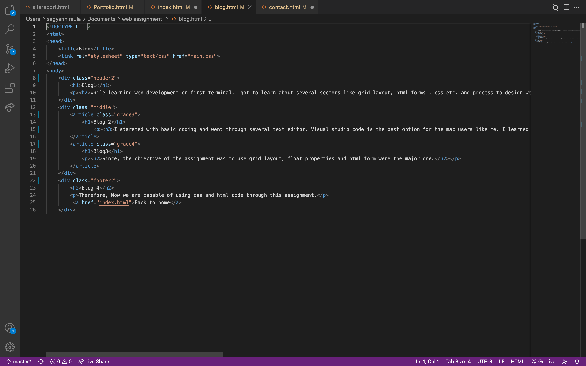
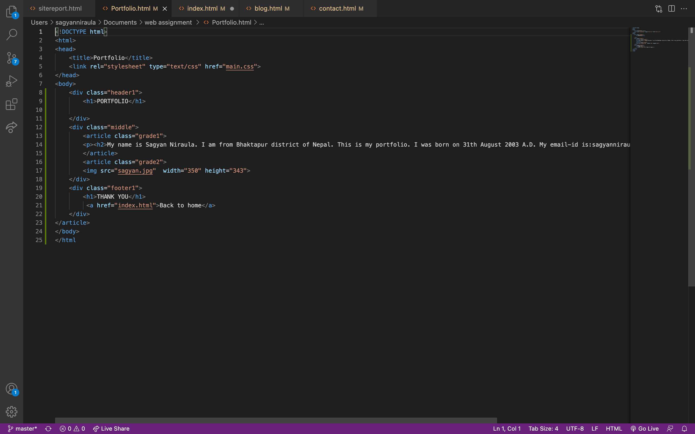
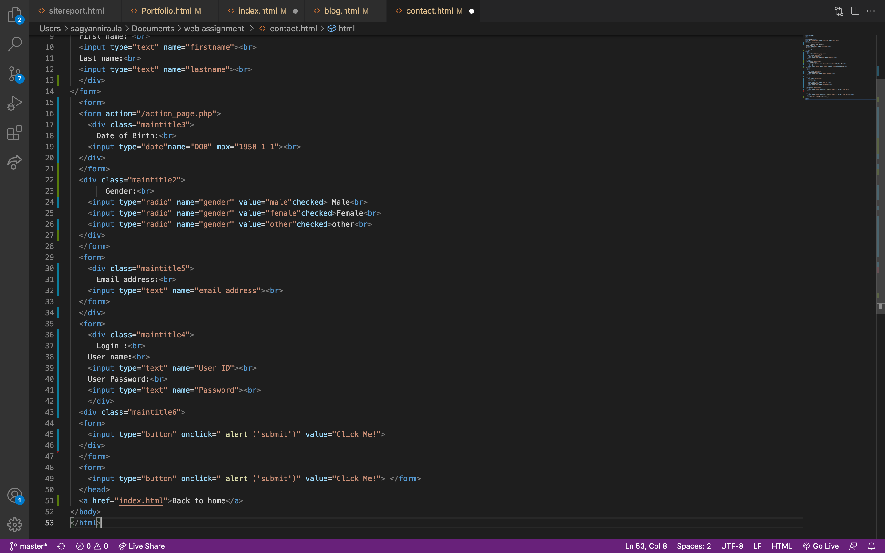
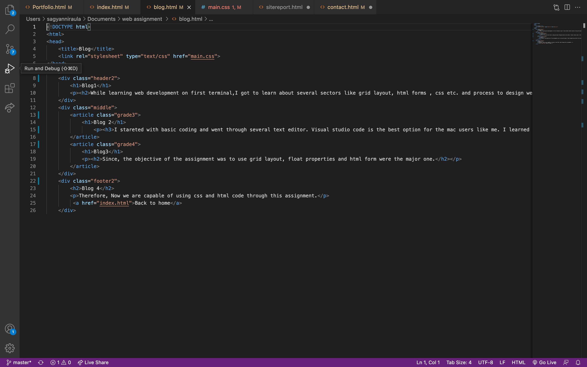

During the learning experience of the basics of web development,coding,design and debugging process no matter how much experience or techinal knowledge we have before learning it. Throughout the week 1 to week 8 we have learn different HTML and CSS tags to used in appropriate places while coding and desiging. As it was first time to write a code and design a webpage we have some ups and down. The ups and downs are listed below.
DownThroughout this week 1 to week 8 I have enjoy this CSY1018 module. It has been good to develop my knowledge and understanding in each of the different areas like HTML and CSS and also with some aspect relating to my onging assignment, it has enbled me to make my webpage different and attractive. The module CSY1018 Web-I was very intresting and was really great experience for me . I was passionate to design and create a simple website for myself. During the classes our sir helps us very well as we all were beginner in html and css.
As in the assignment we should made 5 html paage where there should be index,portfolio,contact,blog and site report. Now I will describe it all what font/colour I have used it in my pages.
This index page inculde my short description about myself. In this page i have used simple text and different colour like yellow green and alice blue.
This portfolio page indrouce my name, university id and include my photo.Here four different colour are used like blachedalmond,lightgoldenrodyellow etc.The text style is simple.
The pge is about contact where we can see to write our first name and last name , your email etc. Through css many colour have been used like black,red,green etc.
This page is about blog. Where we can see diffrent 4 blog. I have write here about my experience in my assignment.There many colour are used and font is simple.
